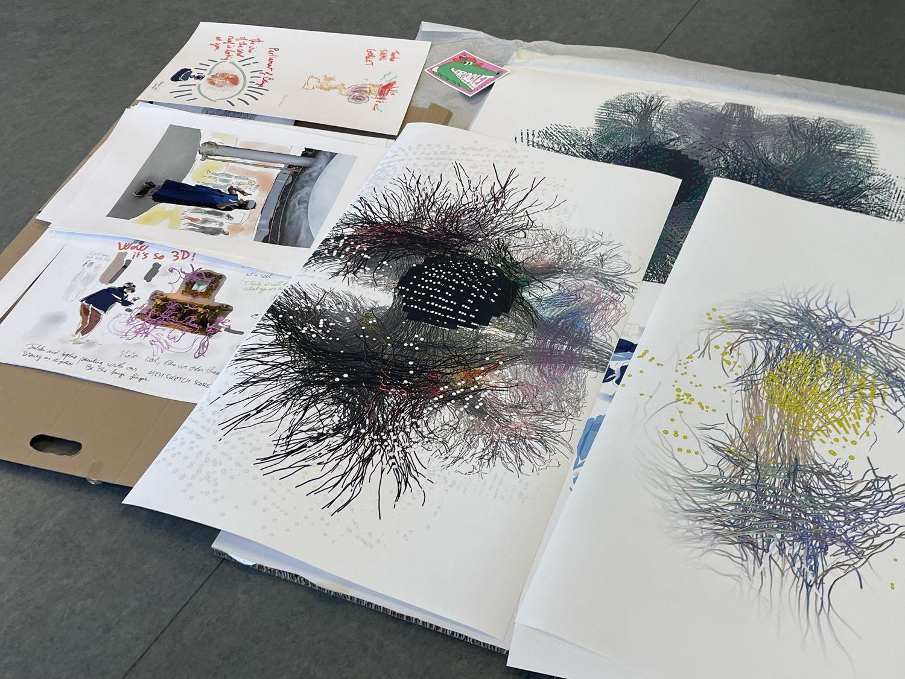
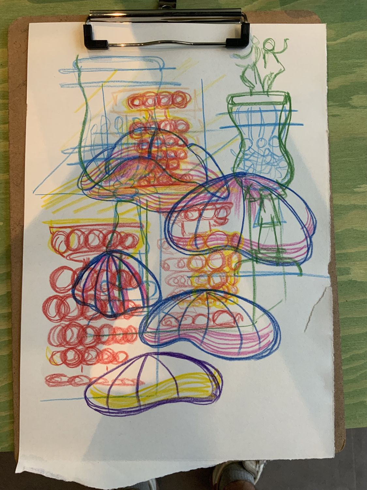
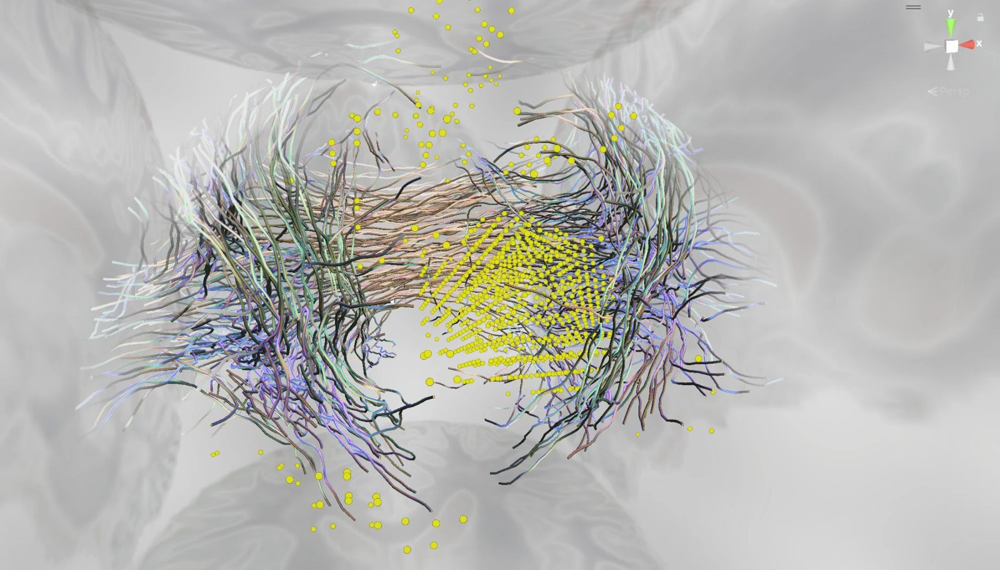

Reflections
On interaction and its intervals
Position
Perception, cognition, embodied action

Regarding where I stand. I study how interactive technologies shape the ways we perceive, think and move. My starting point is the body: perception, cognition and action form one continuous way of meeting the world, and every interface intervenes in that loop, often without being noticed.
Trained in psychology and interaction design, I work between first-person inquiry and empirical study, and I build the interfaces I study. My doctoral research follows how people learn to draw in immersive space, without a page to lean on, and how they form spatial references through their own movement. With clinicians, designers and data scientists I develop navigational interfaces for complex neurosurgical imaging, where what an interface makes visible changes what can be understood.
Alongside research I teach, run practice-based workshops and make creative technology projects. Increasingly I ask how systems that take part in thinking and making, AI among them, change the conditions under which we perceive, reason and come to know.
Interaction, ostranenie, aporia
On making the familiar strange again


Regarding interaction. We talk a great deal about interfaces and much less about interaction. The interface is what can be designed, shown and screenshotted; the interaction is what happens when a person meets it, with a body, a history, a mood and a particular way of paying attention. It is easy to forget that meaning is made in the second, not the first. Every interaction quietly trains us: what to look at, what to ignore, how long to wait, what counts as an answer.
Much of design works to make that encounter frictionless. Seamlessness has become a value in itself: fewer steps, less hesitation, an interface that disappears. But when an interaction becomes fully transparent it also stops being noticed, and what we stop noticing begins to shape us without our consent. As systems increasingly predict, complete and decide on our behalf, the risk is not only error but habituation, a slow narrowing of how we see.
I often return to Shklovsky's concept of ostranenie, which I encountered through Gillo Dorfles's L'intervallo perduto during my studies.
Shklovsky described how habit makes perception automatic, and how art can make the familiar strange again so that it is felt rather than merely recognised. Dorfles, in turn, mourned the loss of the interval: the pause in which perception has time to happen. I still find both relevant when thinking about interfaces that can create moments of distance, reflection and alternative interpretation, rather than always making interactions more immediate.
This is where aporia becomes useful. The word means “without passage”: the point where an argument does not go through and one has to stop and think. An aporetic interface would not hide its uncertainties. It would leave room for the impasse, invite a second look, and show where a representation ends and interpretation begins. In neurosurgical imaging this is far from abstract: what a navigation interface makes visible, comparable or ambiguous shapes what clinicians believe they are seeing.
Refocusing on interactivity means refocusing on the person: on the perceptual, sensorimotor, cognitive and affective capacities they bring to an experience, and on the bodies and minds that do not fit the norm an interface quietly assumes. To design for interaction rather than for interfaces is to treat those capacities as the material of the work, and to keep asking how a system is shaping our ways of seeing and perceiving.
Exhibitions
Selected